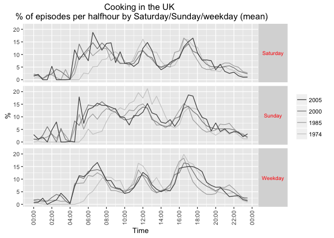
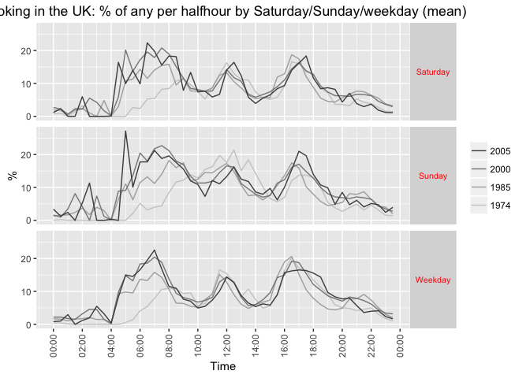
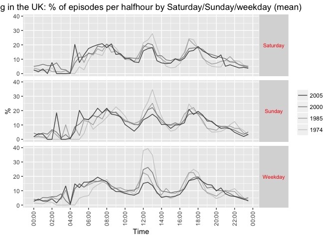
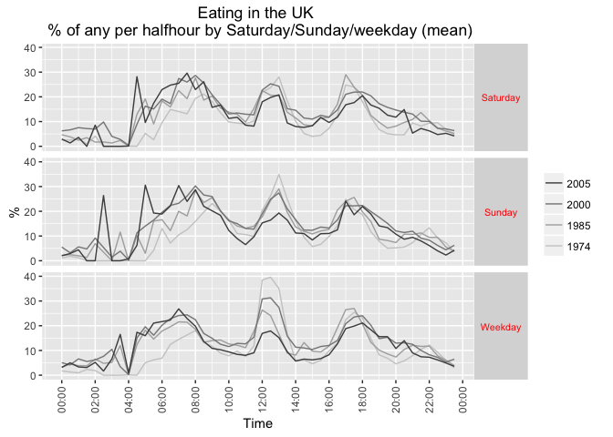
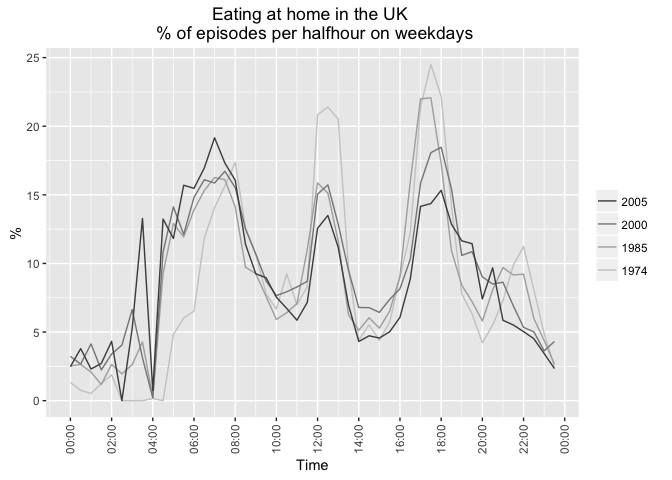
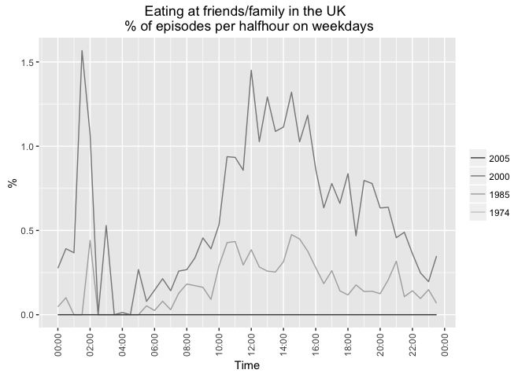
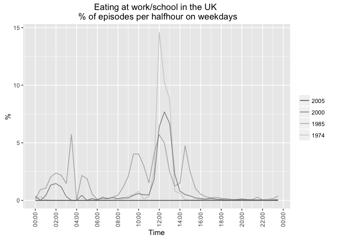
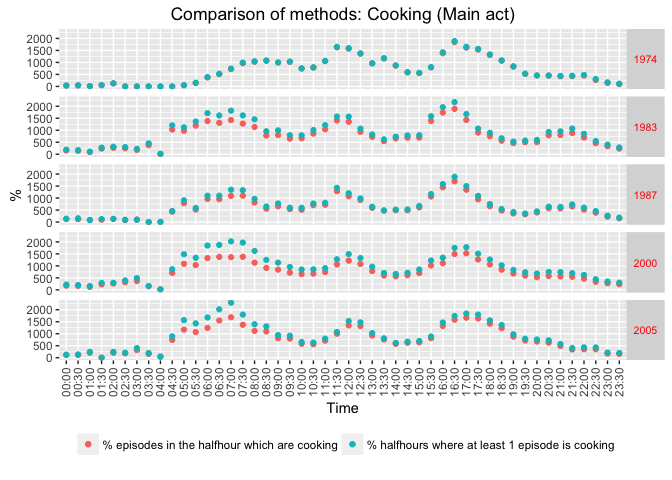
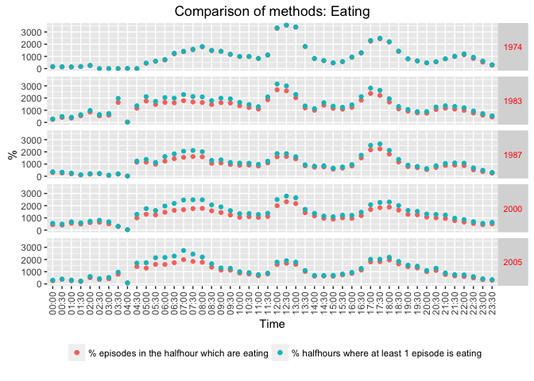

The Changing Timing of Cooking in the United Kingdom and France: Implications for Energy Demand
Mathieu Durand-Daubin, Ben Anderson (mathieu.durand-daubin@edf.fr; b.anderson@soton.ac.uk)
Last run at: 2016-06-16 23:37:57
Abstract (original)
Aggregate energy demand follows strong repetitive patterns on multiple scales (day, week, seasons), due to social rhythms coordinating the synchronicity of consuming practices. These patterns are not only related to natural cycles that remain unchanged, but also to social structures and technology, that change over the years and across different geographical areas. How do these changes and regional differences affect energy demand rhythms? Answering this question, would improve our understanding of demand flexibility and possible future evolutions.
In this research we study the energy footprint of practices which are widely shared, highly regular, and key markers of the social organisation: eating practices. Different types of meals and food preparation are described based on the quantitative data collected by the means of Time Use Surveys in France and in the United Kingdom. These practices are defined in terms of time, durations, primary, secondary and surrounding activities, participants, and places. The distribution of these practices are studied across several time scales (week days, seasons, and decades from 1974 to 2010) and areas (UK, France and French regions). The temporal and spatial variations of eating practices can then be compared with the energy demand measured by the power grids or in specific campaigns, and varying along the same axes. This comparison reveals how parts of the energy demand dynamic are related to specific practices and their synchronisation. Finally, the mechanism of this coevolution can be partly interpreted in the light of wider social and technical changes depicted in socio-economic and demographic series (employment structure, food consumption, home equipment).
## [1] "# Setting up R environment"## [1] "Loading required packages:"## [1] "ggplot2" "data.table" "knitr" "survey"## [[1]]
## [1] TRUE
##
## [[2]]
## [1] TRUE
##
## [[3]]
## [1] TRUE
##
## [[4]]
## [1] TRUE1 Introduction
Discussion of temporal nature of electricity demand, interest in peaks (reasons for this) and the ability to shift in general.
Recent work (DECC HES?) has highlighted the role of cooking (and subequently eating) in generating demand for electricity during the evening peak period (give times).
At the same time recent work (Southerton et al) has shown how the habits and practices of eating have changed over time in the UK anbd Spain. Although this work only provides an analysis of the duration of acts (episodes) it provides evidence of the ongoing evolution of eating habits which may have implications for cooking and thus for electricity/energy demand.
It is possible that ‘re-arranging’ cooking habits may be one way to reduce the problematic evening peak electricity demand. However without a more detailed analysis of what kinds of eating (and especially cooking) are already changing and of the variation in cooking practices across the population, we have little idea where to start.
Digression on time use as a footprint/proxy for practices?
This paper uses nationally representative time use diary data form the United Kingdom and France to compare and contrast the changing timing of cooking and eating in each country over the last 30 years. It then uses the most recent data to analyse and comapre the social and spatial variation in current eating practices in each country. Finally the paper provides preliminary analysis of French regional residential electricity consumption data which highlights the role of regional variation in cooking practices. The paper concludes with a discussion of the implications of the results for electricity demand in the UK and France and outlines directions for future research
2 Cooking, Eating and Energy
Here we need to talk about the changing nature of cooking & eating from the literature (if there is any) - quant (e.g. Southerton) & qual (e.g. Warde).
Need then to link it to energy consumption - in UK gas & electricity used for cooking, in France = electricity (mostly, but LPG?).
More detailed discussion of the problem of peak demand? - expensive/dirty generation?
- energy implication of different preparations : cooking/not cooking, in different places, with different appliances
- giving time : synchronising a number of other energy demanding practices -> peaks
We then need to explain here how we come to discuss these meal types:
- weekday lunch
- weekday dinner
- sunday lunch
Should this come after a general exploration of the data? So that we can look at the timings and then explain why we concentrate on these ‘practices’?
3 Data and Methods
A relatively brief introduction to the time use diary data for each country:
- years & sources
- key collection/diary features
- categories of activities & any coding issues/missing attributes
Discussion of stats tools used. For UK, R and in particular:
- base R - for the basics (R Core Team 2016)
- data.table - for fast (big) data handling (Dowle et al. 2015)
- ggplot2 - for slick grpahics (Wickham 2009)
- survey - for weighted survey analysis (Lumley 2014)
- knitr - to create this document (Xie 2016)
3.1 United Kingdom (MTUS)
##
Read 36.7% of 1364047 rows
Read 81.4% of 1364047 rows
Read 1364047 rows and 17 (of 17) columns from 0.299 GB file in 00:00:04## ba_weekday
## r_dow Saturday Sunday Weekday
## Monday 0 0 177300
## Tuesday 0 0 179170
## Wednesday 0 0 169684
## Thursday 0 0 174795
## Friday 0 0 171673
## Saturday 233789 0 0
## Sunday 0 229471 0Key codes in the MTUS:
- meals at work or school = 5 (not available in all surveys)
- meals or snacks in other places = 6
- food preparation, cooking = 18
- restaurant, cafe, bar, pub = 39 (but may not be eating?!)
- out with friends could be eating = 48 (but check location as might also be at home)
- eloc = location
Mention pooling 1983/4 & 1987 to form one ‘12 month’ survey ref MTUS userguide p13
Mention not using 1995 as it was only collected in May (and location poorly recorded
Report some basic (unweighted) descriptive statsitics of the sample we will use.
| 1974 | 1985 | 2000 | 2005 | NA | |
|---|---|---|---|---|---|
| (16,25] | 493 | 496 | 1058 | 384 | 0 |
| (25,35] | 552 | 737 | 1675 | 798 | 0 |
| (35,45] | 462 | 612 | 1732 | 911 | 0 |
| (45,55] | 527 | 507 | 1630 | 769 | 0 |
| (55,65] | 317 | 356 | 1133 | 812 | 0 |
| (65,75] | 180 | 168 | 927 | 633 | 0 |
| (75,85] | 54 | 60 | 533 | 547 | 0 |
| NA | 13 | 0 | 0 | 0 | 0 |
| 1974 | 1985 | 2000 | 2005 | NA | |
|---|---|---|---|---|---|
| Man | 1239 | 1291 | 3935 | 2185 | 0 |
| Woman | 1359 | 1645 | 4753 | 2669 | 0 |
| NA | 0 | 0 | 0 | 0 | 0 |
Finally we are also interested in trends in the location of both cooking and eating as this may also have implications for the nature of energy demand. The following table reports the weighted count of episodes by location and shows extent to which location of episodes is known in the different surveys.
## ba_survey.x 1974 1985 2000 2005
## ba_eloc
## Family/friends 0 18250 18407 0
## Home 223925 356642 359719 58986
## Out (somewhere) 65238 85804 105989 26024
## Unknown 145 26 370 6199
## Work or school 15768 36923 19356 4584Clearly we are unable to tell if the episode location was at family/friends in any year except 1985 and 2000 whilst a large number are unkown in 2005 when location was poorly coded.
3.1.1 Cooking and eating episodes
Both cooking and eating could have been reported as main and secondary acts in all surveys except 1995 when secondary activities were not collected. For cooking we can see from the table below that the reporting of cooking was roughly constant over time but as a secondary act was low (0.5 to 2 %) in most surveys. As it is never clear whether secondary activities are simply rare, under-reported or not completed due to respondent burden (XX reference XX) in the remainder of the chapter we will focus on cooking as a main activity only.
| Survey | Main (% all episodes) | 2.5% | 97.5% | Secondary (% all episodes) | 2.5% | 97.5% |
|---|---|---|---|---|---|---|
| 1974 | 8.13 | 7.99 | 8.27 | 1.19 | 1.14 | 1.24 |
| 1985 | 7.54 | 7.45 | 7.64 | 1.41 | 1.37 | 1.45 |
| 2000 | 8.13 | 8.02 | 8.23 | 0.47 | 0.45 | 0.50 |
| 2005 | 8.57 | 8.36 | 8.77 | 0.49 | 0.43 | 0.55 |
Similarly, the reporting of eating is also faily constant over time and was reported in between one and four percent of secondary activity episodes. As above, due to uncertainties over the intepretation of secondary activities we will focus on eating as a main activity only in the remainder of the chapter
| Survey | Main (% all episodes) | 2.5% | 97.5% | Secondary (% all episodes) | 2.5% | 97.5% |
|---|---|---|---|---|---|---|
| 1974 | 12.51 | 12.41 | 12.62 | 3.30 | 3.22 | 3.38 |
| 1985 | 11.98 | 11.89 | 12.08 | 3.95 | 3.88 | 4.01 |
| 2000 | 12.70 | 12.59 | 12.81 | 3.60 | 3.52 | 3.68 |
| 2005 | 11.23 | 11.05 | 11.41 | 0.99 | 0.91 | 1.07 |
3.2 France (MTUS)
- 1986 - 5 minutes resolution
- 1998 - 10 minutes resolution
- 2010 - 10 minutes resolution
…
Brief discussion of how we code weekday lunch, weekday dinner and sunday lunch in the French data
4 The changing temporality of cooking and eating in the UK and France
Here we use the MTUS (UK) and French data to look at change in cooking (& eating?) over the last 30 years through the lenses of the three meal type.
Need to decide whether to use: * % of episodes OR * % of halfhours in which the activity was recorded at least once (= ‘any in the half hour’ indicator) I have tested the two approaches below and they seem to give similar results…?
4.1 The distribution of cooking and eating as main activities
Having the established the overall distributions of eating and cooking and chosen to focus on these as main activities, the following table shows the weighted proportion of episodes which were reported as cooking as a main activity by men and women in each survey. In general women report a far higher percentage of episodes as cooking/food preparation than men although the ratio has equalised somewhat from 1:0.17 in 1974 to 1:0.65 by 2005.
| Sex | Survey | % episodes | 2.5% | 97.5% |
|---|---|---|---|---|
| Man | 1974 | 2.11 | 2.01 | 2.22 |
| Woman | 1974 | 12.35 | 12.18 | 12.52 |
| Man | 1985 | 4.40 | 4.28 | 4.53 |
| Woman | 1985 | 9.65 | 9.53 | 9.77 |
| Man | 2000 | 5.96 | 5.81 | 6.12 |
| Woman | 2000 | 9.71 | 9.57 | 9.85 |
| Man | 2005 | 6.62 | 6.33 | 6.91 |
| Woman | 2005 | 10.16 | 9.89 | 10.43 |
In comparison, eating is reported far more equally (see below) with both men and women consistently reporting eating as a main activity in between 11 and 14 percent of episodes.
| Sex | Survey | % episodes | 2.5% | 97.5% |
|---|---|---|---|---|
| Man | 1974 | 14.05 | 13.89 | 14.22 |
| Woman | 1974 | 11.43 | 11.30 | 11.56 |
| Man | 1985 | 12.90 | 12.74 | 13.05 |
| Woman | 1985 | 11.37 | 11.25 | 11.49 |
| Man | 2000 | 13.68 | 13.51 | 13.84 |
| Woman | 2000 | 11.99 | 11.85 | 12.12 |
| Man | 2005 | 11.48 | 11.19 | 11.76 |
| Woman | 2005 | 11.03 | 10.79 | 11.26 |
However as the introduction to this chapter explained, the concern here is less with gender inequalities per se but more with the porentially changing temporal distronution of cooking and eating and the role that gendered norms may play. The following charts show the weighted distribution of cooking as a main activity across time of day and day of the week for the different surveys for all adults.
The first chart shows the results using the ‘% of episodes’ recorded as cooking in each half hour whilst the second shows the results using the ‘any in the half hour’ indicator. We do not see substantial differences.


The following charts show the distribution of eating across time of day and day of the week for the different surveys. Again the first chart shows the % of episodes recorded as eating whilst the second uses the ‘any in the half hour’ indicator. Again we do not see substantial differences.


XX The % episodes & ‘any in the half hour’ indicator patterns look similar - shall we stick with the % of episodes? See also further comparisons in the Annex Section 8.2 XX
XX Brief discussion of our consequential interest in patterns of weekday lunch, weekday dinner and sunday lunch and discussion of how we code them in the MTUS: XX
- Weekday lunch is coded as eating between 12:00 and 14:00 at any location on a week day
- Dinner is coded as any eating 17:00 - 22:00
- Sunday lunch is coded as any eating between 12:00 and 15:00 on Sundays
The following tables summarise the prevalence of these ‘eating practices’ in the different UK surveys.
| Survey | % episodes | 2.5% | 97.5% |
|---|---|---|---|
| 1974 | 2.77 | 2.72 | 2.83 |
| 1985 | 1.67 | 1.64 | 1.71 |
| 2000 | 1.98 | 1.94 | 2.02 |
| 2005 | 1.25 | 1.19 | 1.32 |
| Survey | % episodes | 2.5% | 97.5% |
|---|---|---|---|
| 1974 | 3.66 | 3.61 | 3.71 |
| 1985 | 3.60 | 3.55 | 3.64 |
| 2000 | 4.02 | 3.97 | 4.08 |
| 2005 | 3.76 | 3.67 | 3.86 |
| Survey | % episodes | 2.5% | 97.5% |
|---|---|---|---|
| 1974 | 0.59 | 0.56 | 0.62 |
| 1985 | 0.49 | 0.47 | 0.52 |
| 2000 | 0.51 | 0.49 | 0.53 |
| 2005 | 0.37 | 0.33 | 0.41 |
4.2 Week-day eating
- Contemporary : timing, location, participants, seasons, who cooks (content can change depending on the relevance for this type of meal)
- What changed in history -> energy implications
- What varies between regions -> energy implications



NB: eating out could include travelling.
4.3 Dinner
- Contemporary : timing, location, participants, seasons, who cooks
- What changed in history -> energy implications
- What varies between regions -> energy implications4.4 Sunday lunch
- Contemporary : timing, location, participants, seasons, who cooks
- What changed in history -> energy implications
- What varies between regions -> energy implications5 Discussion
Draw together the threads of the results to discuss:
- Main eating daily structure and synchronisation: giving time
- Energy demand location: home, tertiary, industry
- Employment, gender roles: how other practices change and constrain
6 Acknowledgements
This work was funded by RCUK through the End User Energy Demand Centres Programme via the “DEMAND: Dynamics of Energy, Mobility and Demand” Centre:
7 Statistical annexes (if needed)
7.1 MTUS UK sample
MTUS activity codes collected per year.
##
## 1974 1985 2000 2005
## adult care 0 1237 1235 301
## art or music 0 682 634 0
## attend sporting event 173 352 431 0
## child/adult care travel 3275 5542 4528 996
## cinema, theatre, opera, concert 182 284 394 179
## cleaning 13082 12694 15158 3032
## computer games 0 142 825 0
## consume other services 0 1482 1119 0
## consume personal care services 622 1248 974 0
## conversation (in person, phone) 3855 12327 9047 1032
## correspondence (not e-mail) 0 1773 622 0
## cycling 0 53 255 88
## e-mail, surf internet, computing 0 100 2252 601
## education travel 175 646 602 0
## food preparation, cooking 24452 35968 37889 8653
## games (social & solitary)/other in-home social 0 1720 2029 0
## gardening/pick mushrooms 1956 2589 3863 0
## general indoor leisure 2645 651 1 648
## general out-of-home leisure 1619 443 316 0
## general sport or exercise 494 1494 2129 507
## homework 102 880 472 100
## imputed personal or household care 2622 5273 1287 10
## imputed sleep 487 39 54 25
## imputed time away from home 244 220 379 27
## knit, crafts or hobbies 1969 2769 1367 1098
## laundry, ironing, clothing repair 1236 8078 10003 1376
## leisure & other education or training 109 259 375 51
## listen to music or other audio content 655 962 1069 0
## listen to radio 2272 2110 2347 0
## look for work 0 394 82 0
## maintain home/vehicle, including collect fuel 3161 4389 5414 1080
## meals at work or school 2519 4540 2455 0
## meals or snacks in other places 35370 52147 56228 11038
## no activity, imputed or recorded transport 499 2 114 0
## no recorded activity 145 5168 3937 80
## other domestic work 2751 9093 8961 0
## other outside recreation 564 174 491 0
## other public event, venue 300 250 789 0
## other time at workplace 59 31 217 0
## other travel 12674 13599 16373 5997
## paid work at home 813 1746 1677 625
## paid work-main job (not at home) 13031 22042 9194 4478
## party, social event, gambling 987 1857 830 0
## pet care (not walk dog) 739 2925 3640 1090
## physical, medical child care 4024 12762 11177 2883
## purchase goods 6187 9793 10188 2540
## read 6818 13457 13625 2335
## read to, talk or play with child 1154 2779 4551 0
## receive or visit friends 9392 12522 14475 3832
## regular schooling, education 217 746 341 117
## relax, think, do nothing 23515 8891 11290 4200
## restaurant, café, bar, pub 1912 4865 3028 2136
## second or other job not at home 124 122 99 0
## set table, wash/put away dishes 0 15317 14522 0
## shop, person/hhld care travel 3052 8268 16032 2456
## sleep and naps 40316 41077 36264 10051
## supervise, accompany, other child care 0 1477 704 0
## teach, help with homework 0 244 524 0
## travel as a part of work 351 606 65 0
## travel to/from work 14219 14296 10717 2435
## unpaid work to generate household income 0 43 0 0
## voluntary, civic, organisational act 448 2162 4558 206
## voluntary/civic/religious travel 0 944 3858 0
## walk dogs 0 1231 2743 0
## walking 1768 2562 7020 2149
## wash, dress, care for self 27995 51442 38498 8709
## watch TV, video, DVD, streamed film 23919 39912 45025 8640
## work breaks 0 7130 1494 0
## worship and religion 337 1074 1308 235MTUS episodes per month by year
| 1974 | 1985 | 2000 | 2005 | |
|---|---|---|---|---|
| January | 0 | 83303 | 33715 | 0 |
| February | 129080 | 17762 | 38166 | 0 |
| March | 49613 | 80533 | 30790 | 31178 |
| April | 0 | 151098 | 33372 | 0 |
| May | 0 | 32416 | 44442 | 0 |
| June | 0 | 1304 | 39563 | 23198 |
| July | 0 | 0 | 55426 | 0 |
| August | 96472 | 0 | 54732 | 0 |
| September | 26421 | 257 | 44863 | 22144 |
| October | 0 | 0 | 33098 | 0 |
| November | 0 | 101961 | 34559 | 19516 |
| December | 0 | 5462 | 21438 | 0 |
MTUS episodes per season by year
| 1974 | 1985 | 2000 | 2005 | |
|---|---|---|---|---|
| Autumn | 26421 | 102218 | 112520 | 41660 |
| Spring | 49613 | 264047 | 108604 | 31178 |
| Summer | 96472 | 1304 | 149721 | 23198 |
| Winter | 129080 | 106527 | 93319 | 0 |
MTUS episode locations per year
| 1974 | 1985 | 2000 | 2005 | |
|---|---|---|---|---|
| at another’s home | 0 | 17430 | 19109 | 0 |
| at own home | 220990 | 340883 | 331560 | 60529 |
| at place of worship | 337 | 833 | 768 | 0 |
| at restaurant, bar etc | 1700 | 6095 | 6124 | 2499 |
| at school | 326 | 1023 | 527 | 104 |
| at services or shops | 6787 | 13011 | 13091 | 2021 |
| at workplace | 15658 | 33658 | 13809 | 4037 |
| location unknown | 142 | 25 | 348 | 6163 |
| other locations | 19633 | 13631 | 12242 | 6424 |
| travelling | 36013 | 47507 | 66586 | 14259 |
7.2 Testing methods to analyse temporal distributions of cooking & eating episodes
In order to control for the potentially different levels of reporting due to the different diary slot durations, we could also calculate an indicator which is 1 if at least one epsiode in a given half hour is reported to be the activity of interest and 0 otherwise. In the case of the 1974 data where the diary slot duration was 30 minutes there will be no difference. However in the case of the other diaries where data was collected in slots of 15 minutes (1983, 1987) or 10 minutes (2000/1, 2005) duration, this will have the effect of increasing the apparent rate as the denominator is no longer the sum of all episodes in the half hour but the (lower) number of half hours.
The tables below show the distribution of these indicators across years.
| ba_survey | Cooking (mean n episodes per halfhour) | Cooking (max episodes per hh) | Cooking (% ‘at least 1’) |
|---|---|---|---|
| 1974 | 0.08 | 1 | 8.39 |
| 1985 | 0.09 | 6 | 8.70 |
| 2000 | 0.11 | 3 | 10.12 |
| 2005 | 0.11 | 3 | 10.29 |
| ba_survey | Eating (mean n episodes per halfhour) | Eating (max episodes per halfhour) | Eating (% ‘at least 1’) |
|---|---|---|---|
| 1974 | 0.13 | 2 | 12.99 |
| 1985 | 0.14 | 4 | 14.12 |
| 2000 | 0.17 | 3 | 15.73 |
| 2005 | 0.13 | 3 | 13.20 |
We would expect there to be a maximum count of 1 in 1974 (the diary slots were 30 minutes long) but higher in the later years (diary slots are shorter). There appear to be some half hours with a lot of episode ‘churn’ - where the maximum is greater than 4. The following stem and leaf plots show the frequency of multiple episodes of cooking or eating per half hour.
Cooking:
##
## The decimal point is at the |
##
## 0 | 00000000000000000000000000000000000000000000000000000000000000000000+1007676
## 0 |
## 1 | 00000000000000000000000000000000000000000000000000000000000000000000+96990
## 1 |
## 2 | 00000000000000000000000000000000000000000000000000000000000000000000+4281
## 2 |
## 3 | 00000000000000000000000000000000000000000000000000000000000000000000+293
## 3 |
## 4 | 0000000000
## 4 |
## 5 | 0
## 5 |
## 6 | 0Eating:
##
## The decimal point is 1 digit(s) to the left of the |
##
## 0 | 00000000000000000000000000000000000000000000000000000000000000000000+951337
## 2 |
## 4 |
## 6 |
## 8 |
## 10 | 00000000000000000000000000000000000000000000000000000000000000000000+152259
## 12 |
## 14 |
## 16 |
## 18 |
## 20 | 00000000000000000000000000000000000000000000000000000000000000000000+5417
## 22 |
## 24 |
## 26 |
## 28 |
## 30 | 00000000000000000000000000000000000000000000000000000000000000000000+232
## 32 |
## 34 |
## 36 |
## 38 |
## 40 | 0000000The stem plots suggest that these are extremely rare events and so can be discounted as affecting the indicator unduly.
In the rest of this section we explore the two different approaches to comparing temporal distirbutions. The first graph in each section simply shows the percentage of episodes in a given half hour that were reported as being the activity of interest.
This second graphs repeat the above analysis but instead uses the ‘any in the half hour’ indicator. In theory this should control for any affects of the shorter diary slots in the more recent diaries but it will, of course, treat (e.g.) 1 or 3 episodes within a half hour as equivalent.
7.2.1 Cooking
The following graph compares the results of these two methods for cooking.

As we can see (as expected) that the ‘at least 1 in a given half hour’ matches to the % episodes per half hour in 1974 (1/2 hour diary slots), is higher in the morning in 1983/1987 (15 minute slots), similar in 1995 (15 minute slots) and higher in the mornings in 2000 & 2005 (10 minute slots). The indicator does not appear to unduly affect the observed patterns although it may over-emphasise cooking done in shorter durations such as in the early morning. This may lead us to conclude that ‘more’ cooking is being done in the morning which is not the case since this indicator cannot measure ‘levels’ of an activity.
7.2.2 Eating
And now we do the same for eating.

As for cooking, the ‘at least once in a given half hour’ indicator records slightly higher values than the % episodes indicator from 1983 onwards (but not 1995) and especially in the morning. The same cautions therefore apply.
Meta: Analysis completed in: 11.516 seconds using knitr in RStudio.
Footnotes:
References
Dowle, M, A Srinivasan, T Short, S Lianoglou with contributions from R Saporta, and E Antonyan. 2015. Data.table: Extension of Data.frame. https://CRAN.R-project.org/package=data.table.
Lumley, T. 2014. Survey: Analysis of Complex Survey Samples. https://CRAN.R-project.org/package=survey.
R Core Team. 2016. R: A Language and Environment for Statistical Computing. Vienna, Austria: R Foundation for Statistical Computing. https://www.R-project.org/.
Wickham, Hadley. 2009. Ggplot2: Elegant Graphics for Data Analysis. Springer-Verlag New York. http://ggplot2.org.
Xie, Yihui. 2016. Knitr: A General-Purpose Package for Dynamic Report Generation in R. https://CRAN.R-project.org/package=knitr.